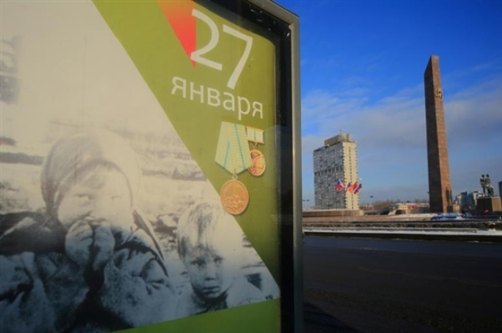
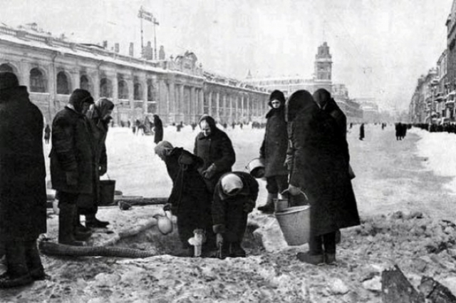
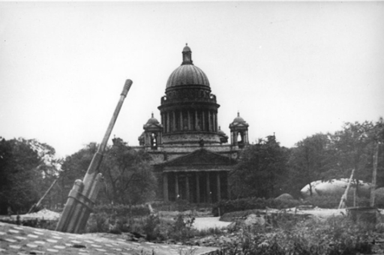

Блокада длилась 872 дня
8 сентября 1941 года Ленинград был взят в блокадное кольцо. Оно было прорвано 18 января 1943 года. К началу блокады в Ленинграде не было достаточного количества запасов еды и топлива. Единственным путем сообщения с городом было Ладожское озеро. Именно через Ладогу пролегла Дорога жизни – магистраль, по которой в блокадный Ленинград доставлялись грузы с продовольствием. По озеру было сложно провезти количество еды, необходимое для всего населения города. В первую блокадную зиму в голе начался голод, появились проблемы с отоплением и транспортом. Зимой 1941 года умерли сотни тысяч ленинградцев. 27 января 1944 года, через 872 дня после начала блокады, Ленинград был полностью освобожден от фашистов.

630 тысяч ленинградцев погибли
За время блокады от голода и лишений погибло свыше 630 тысяч ленинградцев. Эта цифра была озвучена на Нюрнбергском процессе. По другой статистике, цифра может достигать 1,5 миллиона человек. Только 3% смертей приходятся на фашистские артобстрелы и бомбежки, остальные 97% погибли от голода. Мертвые тела, лежащие на улицах города, воспринимались прохожими как обыденное явление. Большинство погибших в блокаду похоронены на Пискаревском мемориальном кладбище.
Минимальный паек - 125 граммов хлеба
Главной проблемой осажденного Ленинграда был голод. Служащие, иждивенцы и дети получали в период с 20 ноября по 25 декабря только 125 граммов хлеба в день. Рабочим полагалось 250 граммов хлеба, а личному составу пожарных команд, военизированной охраны и ремесленных училищ – 300 граммов. В блокаду хлеб готовили из смеси ржаной и овсяной муки, жмыха и нефильтрованного солода. Хлеб получался практически черным по цвету и горьким на вкус.

1,5 миллиона эвакуированных
За время трех волн эвакуации Ленинграда из города были вывезены в общей сложности 1,5 миллиона человек – почти половина всего населения города. Эвакуация началась уже через неделю после начала войны. Среди населения велась разъяснительная работа: многие не хотели покидать свои дома. К октябрю 1942 года эвакуация была завершена. В первую волну в районы Ленобласти были вывезены около 400 тысяч детей. 175 тысяч вскоре были возвращены обратно в Ленинград. Начиная со второй волны, эвакуацию совершали по Дороге жизни через Ладожское озеро.
1500 громкоговорителей
Доля оповещения ленинградцев о вражеских атаках на улицах города было установлено 1500 громкоговорителей. Кроме того, сообщения транслировались через городскую радиосеть. Сигналом тревоги стал звук метронома: его быстрый ритм означал начало воздушной атаки, медленный – отбой. Радиовещание в блокадном Ленинграде было круглосуточным. В городе действовало распоряжение, запрещающее отключать радиоприемники в домах. Дикторы радио рассказывали о ситуации в городе. Когда прекратилось вещание радиопередач, стук метронома все рано продолжал транслироваться в эфире. Его стук называли живым биением сердца Ленинграда.
- 32,1 °C
Первая зима в осажденном Ленинграде была суровой. Столбик термометра падал до отметки - 32,1 °C. Средняя температура месяца была – 18,7 °C. В городе даже не зафиксировали привычных зимних оттепелей. В апреле 1942 года снежный покров в городе достигал 52 см. Отрицательная температура воздуха стояла в Ленинграде более полугода, продержавшись до мая включительно. Отопление не поступало в дома, были отключены канализация и водопровод. Прекратилась работа на заводах и фабриках. Главным источником тепла в домах стала печка-«буржуйка». В ней сжигали все, что горело, в том числе книги и мебель.

6 месяцев осады
Даже после снятия блокады немецкие и финские войска в течение полугода осаждали Ленинград. Выборгская и Свирско-Петрозаводская наступательные операции советских войск при поддержке Балтийского флота позволили освободить Выборг и Петрозаводск, окончательно отбросив противника от Ленинграда. В результате операций советские войска продвинулось в западном и юго-западном направлении на 110-250 км, и Ленинградская область была освобождена от вражеской оккупации.

150 тысяч снарядов
Во время блокады Ленинград постоянно подвергался артобстрелам, которых было особенно много в сентябре и октябре 1941 года. Авиация совершала по несколько налетов в день - в начале и в конце рабочего дня. Всего за время блокады на Ленинград было выпущено 150 тысяч снарядов и сброшено больше 107 тысяч зажигательных и фугасных бомб. Снарядами было разрушено 3 тысячи зданий, а повреждено больше 7 тысяч. Около тысячи предприятий были выведены из строя. Для защиты от артобстрелов ленинградцы возводили оборонительные сооружения. Жители города построили больше 4 тысяч дотов и дзотов, оборудовали в зданиях 22 тысяч огневых точек, возвели на улицах 35 километров баррикад и противотанковых препятствий.
4 вагона кошек
Домашних животных в январе 1943 года привезли в Ленинград из Ярославля для борьбы с полчищами грызунов, грозивших уничтожить запасы продовольствия. В только что освобожденный город прибыло четыре вагона дымчатых кошек – именно дымчатые кошки считались лучшими крысоловами. За привезенными кошками сразу же выстроилась длинная очередь. Город был спасен: крысы исчезли. Уже в современном Петербурге в знак благодарности животным-избавителям на карнизе домов на Малой Садовой улице появились памятники коту Елисею и кошке Василисе.
300 рассекреченных документов
Архивный комитет Санкт-Петербурга готовит электронный проект «Ленинград в осаде». Он предполагает размещение на портале «Архивы Санкт-Петербурга» виртуальной выставки архивных документов по истории Ленинграда в годы блокады. 31 января 2014 года будут опубликованы 300 отсканированных в высоком качестве исторических бумаг о блокаде. Документы будут объединены в десять разделов, показывающих разные стороны жизни блокадного Ленинграда. Каждый раздел будут сопровождаться комментариями специалистов.